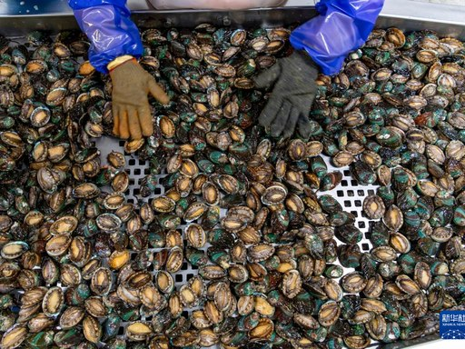
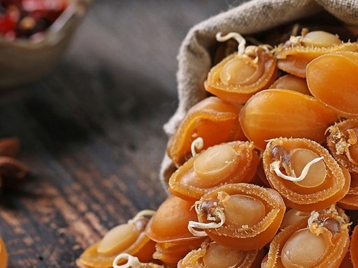

重点突出
育苗养殖分苗与管养加工和预制菜冷链物流和品牌销售智慧养殖系统
一条从种苗到餐桌的完整链条
前詹鲍鱼产业链条完整，覆盖鲍鱼苗种繁育、中间培育、工厂化养殖、成鲍收获、加工销售和研学展示等关键环节。育苗车间里技术员精心护苗，养殖池区里工人分苗管养，加工车间里分级打包，冷链车辆发往各地市场——每个环节都环环相扣，串联起千家万户的生计与希望。
近年来，前詹镇还大力发展鲍鱼预制菜和精深加工，推动产品从“卖原料”向“卖产品”“卖品牌”转变。产业链条越完整，产品附加值越高，带动就业和富民效应也越明显。

鲍鱼苗种培育工厂化养殖车间
鲍鱼深加工产品智慧赋能全链条
前詹鲍鱼产业以智慧养殖为方向，通过水质监测、环境管理与数字化记录，推动养殖过程精细化、智能化。从育苗到出货，全链条数据可追溯，为鲍鱼产业高质量发展插上科技翅膀。